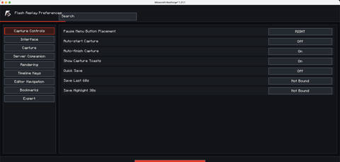

Wiki tecnica para creadores y desarrolladores de addons.
Instalacion y requisitos
Loader soportado, carpeta mods, primer arranque y controles iniciales antes de grabar.
Free downloadAll Rights ReservedNeoForge 1.21.1

01
Requisitos actuales
Flash Replay es una mod client-side para Minecraft NeoForge 1.21.1. La build publica se instala en el cliente del creador y no requiere que el servidor instale la misma mod.
Usa la version de NeoForge indicada en la pagina oficial del proyecto. Si la pagina de descarga indica un minimo mas reciente, sigue esa pagina.
| Elemento | Valor operativo |
|---|---|
| Minecraft | 1.21.1 en la build actual |
| Loader | NeoForge |
| Tipo de mod | Client-side |
| Licencia | Free download, All Rights Reserved |
| Redistribucion de fuente | No incluida en la distribucion publica |
02
Instalar
- Descarga el
.jardesde la pagina oficial de CurseForge o Modrinth. - Cierra Minecraft.
- Copia el
.jaren la carpetamodsdel perfil. - Inicia el juego y revisa la pantalla Mods.
- Abre las opciones de la mod y revisa
Recording Controls,Recording,InterfaceyExporting.
03
Checklist del primer arranque
- Asigna teclas para start/finish recording, Save Last 60s, Highlight 30s y markers.
- Elige Studio Mode: Simple para trabajo rapido, Director para camara y actores, Pro para control completo.
- Verifica la carpeta de exportacion antes de un render largo.